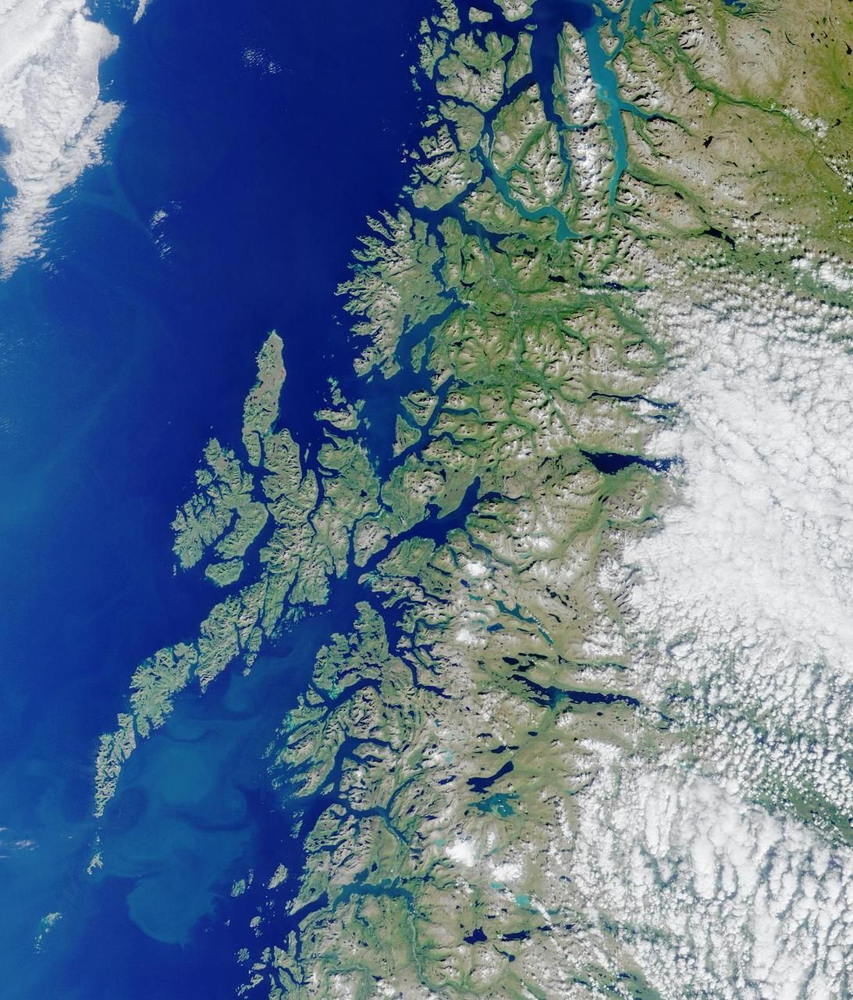

Part 3: The Changing Surface · Chapter 9 of 15
The Moving Map
Continents travel through climates, and the rocks remember.

Because plates move, every continent has travelled across the globe over its history. The rocks of a single country can record deserts, tropical swamps and ice sheets, not because the climate in one place changed so dramatically, but because the land itself moved through different climate zones.
Britain is a good example. Its coal formed from swamp forests that grew near the equator about 300 million years ago. Its red sandstones record hot deserts when it lay in the dry belt north of the equator. Later it sat under warm, shallow seas full of life, and only recently has it reached its present northern position.
Shelves and shallow seas
Continents do not end at the shoreline. Most are fringed by a continental shelf, a gently sloping platform covered by shallow sea, before the sea floor drops away to the deep ocean. Seas such as the North Sea and the Persian Gulf lie on flooded continental crust. Because the shelves are so flat, even a small rise or fall in sea level floods or exposes huge areas.
Ice ages
Over the last 2.6 million years the Earth has swung repeatedly between cold glacial periods and warmer interglacials like the present one. At the coldest times, ice sheets covered much of North America and northern Europe, and sea level was about 120 metres lower than today. Glaciers carved deep, steep-sided U-shaped valleys. Where the sea later flooded them, they became fjords.
Key terms
- continental shelf
- The gently sloping edge of a continent, covered by shallow sea.
- shelf sea
- A shallow sea that floods a continental shelf, like the North Sea or the Persian Gulf.
- uplift
- The slow raising of land by movements inside the earth.
- climate
- The usual weather of a place over a long time.
- coal seam
- A layer of coal in rock, made from the compressed remains of ancient forests.
- arid
- Very dry, with little or no rain.
- ice age
- A long cold period when ice sheets spread over much of the land.
- fjord
- A long, deep, narrow sea inlet in a valley carved by ice.
- U-shaped valley
- A valley with steep sides and a wide floor, carved out by a moving glacier.
Check your understanding
Think of your answer, then open each question to compare.
Why can one country contain rocks from deserts, tropical swamps and ice sheets?
The land has moved through different climate zones as its plate drifted.
What is a continental shelf?
The gently sloping, shallow-sea-covered edge of a continent, before the drop to the deep ocean.
How does a fjord form?
A glacier carves a deep U-shaped valley, which the sea floods after the ice melts.